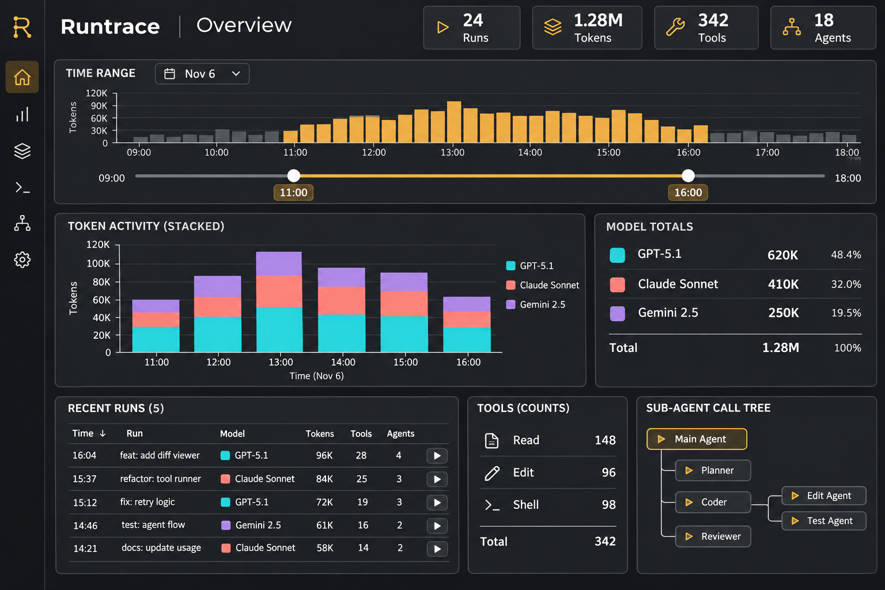
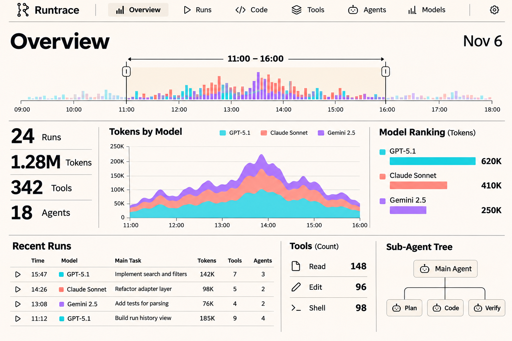
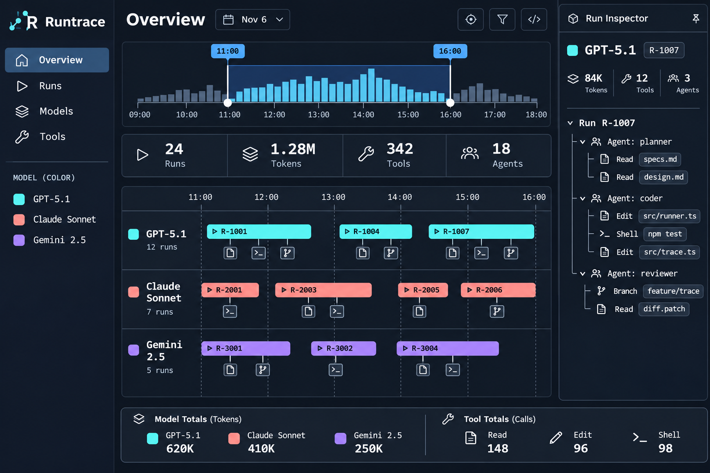
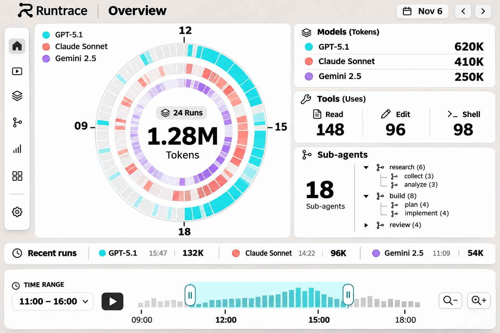
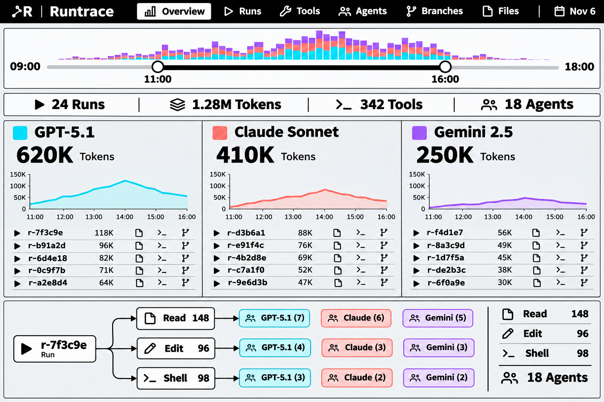

All fake data. The dashboards are live and clickable. Sol's pictures are static. Round 1
Two separate runs, with only the project and goal as a brief.
Sol's image on the left, Fable's working version on the right.





Follows your bento reference. Static pictures.
Sol got only the project information. Static pictures.